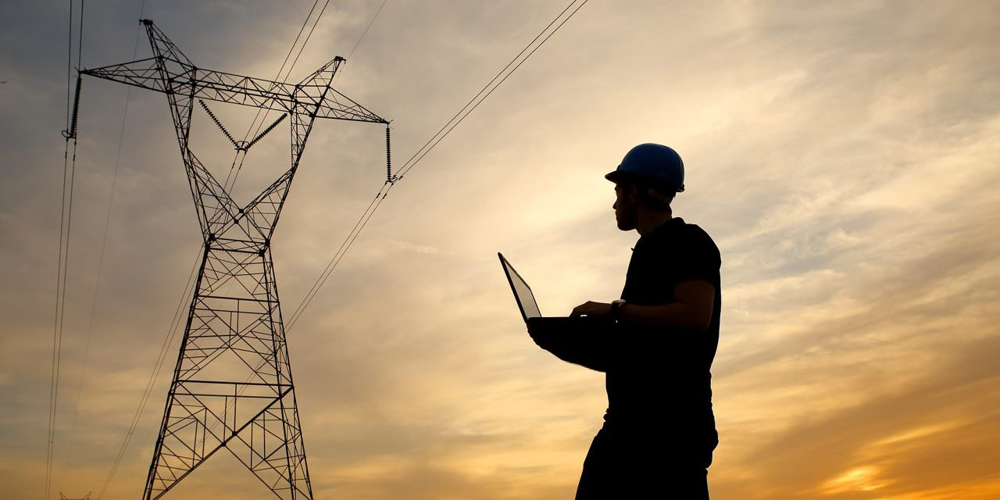

Energia elétrica
A energia elétrica é uma forma de energia que se origina da energia potencial elétrica, baseada na geração de diferenças de potencial elétrico, permitindo estabelecer corrente elétrica entre dois pontos e os fenômenos físicos envolvidos. Pode ser obtida também a partir da energia cinética. Mediante a transformação adequada é possível obter que tal energia mostre-se em outras formas finais de uso direto, em forma de luz, movimento ou calor, segundo os elementos da conservação da energia.
É uma das formas de energia que a humanidade mais utiliza na atualidade, graças a sua facilidade de transporte, baixo índice de perda energética durante conversões.
A energia elétrica é obtida principalmente através de termoelétricas, usinas hidrelétricas, usinas eólicas e usinas termonucleares.